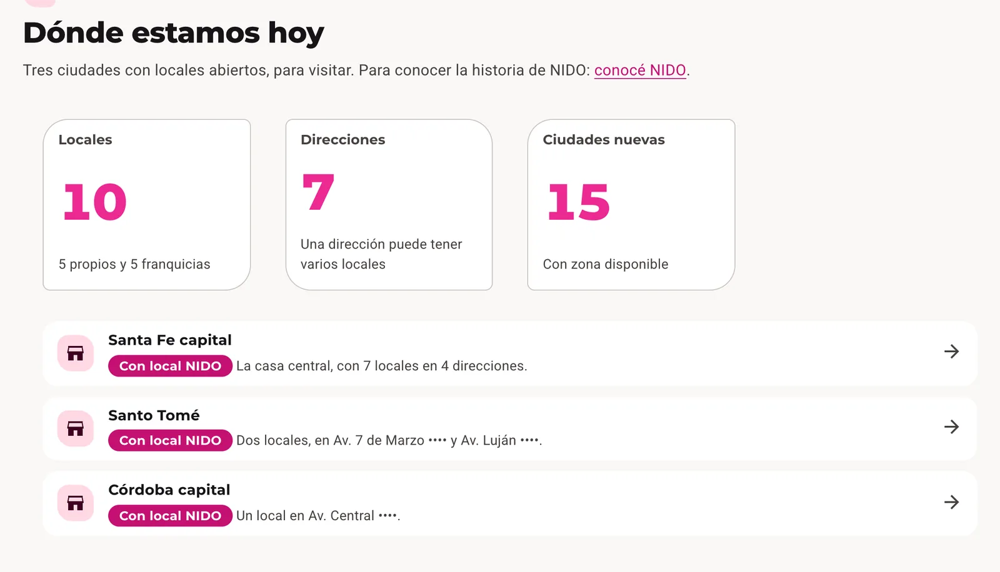
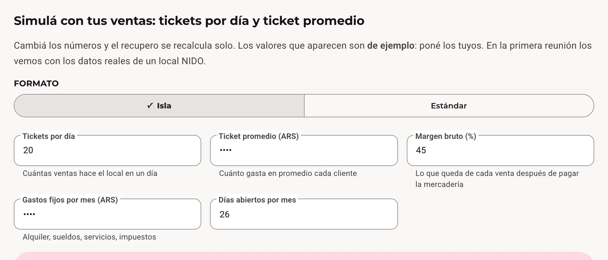
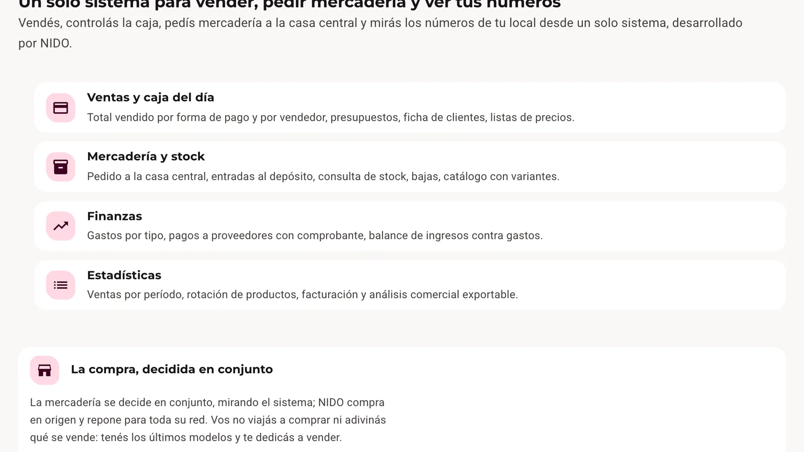
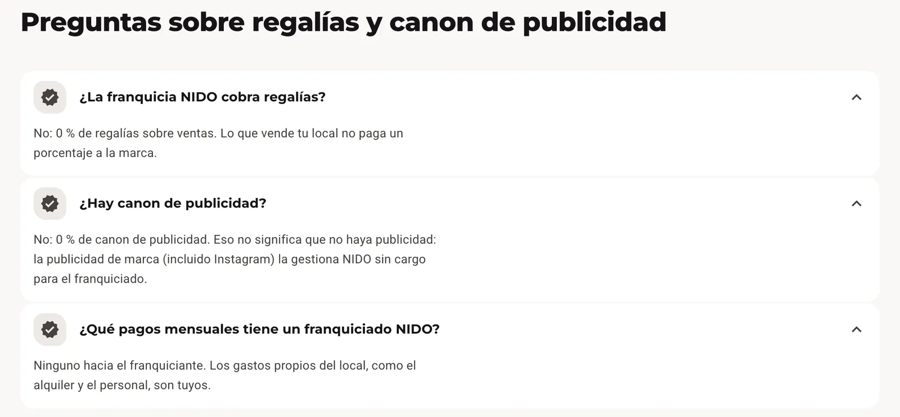
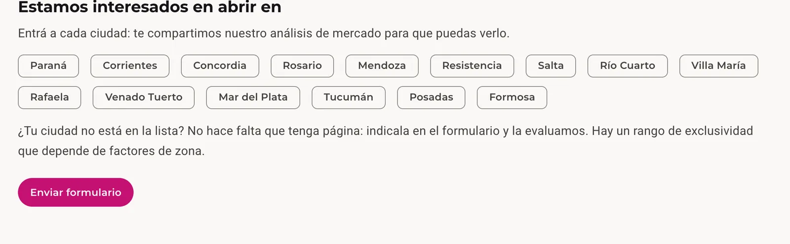

Nido Accesorios: campañas que traen candidatos y visitas
Una cadena argentina de accesorios para celulares, con 10 locales y un programa de franquicias. Manejo sus campañas de Meta y Google y su email marketing, mido todo lo que sale y le entrego estadísticas y una guía para sus redes.
Nido Accesorios es un nombre de fantasía: se reemplazaron el nombre, el logo y el dominio del cliente.
Lo que el negocio necesitaba
Diez locales, cinco propios y cinco en franquicia, una tienda online y un programa para abrir en nuevas ciudades. Al marketing le pidió tres cosas:
- Vender más en los locales y online.
- Encontrar franquiciados y personal para abrir nuevas ciudades.
- Saber qué campaña trajo qué, para decidir la inversión con números que se pueden leer.
Campañas
Meta y Google, cada campaña con un objetivo y un costo por resultado. Resultados de los últimos 28 días, leídos de la Campaign Suite con datos de Meta Ads, Google Ads y Google Analytics 4 (2026).
| Campaña | Objetivo | Resultado |
|---|---|---|
| Vacante de responsable de local | Meta, formulario de postulación | 198 postulaciones, la campaña con mejor costo por resultado |
| Apertura de un local en Córdoba | Meta, alcance | 74.758 personas alcanzadas y 8.739 vistas de video |
| «Pasá por Nido y sumate» | Meta, tráfico | 2.375 clics al enlace y 29.416 vistas de video; Analytics registra 2.449 visitas de esta campaña |
| Tráfico a la tienda | Instagram y Facebook pagos | 3.574 visitas en la semana contra 1.019 en la anterior: +1.515 desde Instagram y +928 desde Facebook |
«Pasá por Nido y sumate» fue la campaña de tráfico con mejor costo por clic. En total, la cuenta suma 505 postulaciones en 28 días, 498 de ellas por formularios de Meta.
La web de franquicias, donde llega cada campaña
Para encontrar franquiciados armé una web de franquicias: un hub, páginas de apoyo (cuánto cuesta, rentabilidad, cómo abrir, antes de firmar, por qué una franquicia Nido, ciudades y preguntas frecuentes) y 15 páginas de ciudad, cada una con su formulario de contacto y su botón de WhatsApp.





Deslizá hacia el costado o usá las flechas. Tocá una captura para ampliarla.
Medición
- Embudo en GA4 con eventos propios, y Microsoft Clarity en la sección de franquicias.
- Clics a WhatsApp, Search Console y la conversión importada a Google Ads.
- Filtro de tráfico interno, para que los números sean de clientes y no del equipo.
- Todo junto en la Campaign Suite, el tablero que diseñé para que el equipo vea los resultados.
Redes: estadísticas y guía
La marca produce su propio contenido para Instagram y Facebook. Yo le entrego las estadísticas, la auditoría, la guía y el calendario. La primera entrega fue una auditoría de 108 publicaciones y de 90 días de estadísticas.
De ahí salió una guía de marca para redes (versión 7, para Instagram y Facebook) con lo que conviene mantener, una mezcla de contenidos por pilar, un ritmo semanal de unas cinco publicaciones y un mes de ejemplo de 20 publicaciones en cuatro pilares. El calendario se revisa todos los meses con el cliente, a partir de lo que muestran las estadísticas y la suite.
Campañas de email para el calendario del comercio: San Valentín, la vuelta al cole, el programa de puntos y la franquicia. Diseñadas pensando primero en el celular, con el producto y la oferta en la primera pantalla.
Cómo trabajo con el cliente
- Empiezo por la necesidad del negocio, no por un formato: una apertura, una vacante, un mes lento, una ciudad nueva. Cada una se vuelve una campaña con un objetivo.
- Nada sale al aire sin aprobación. Las campañas se crean en pausa, con la pieza, el público y el presupuesto en un plan de una página.
- La medición se arma antes del anuncio, para poder rastrear cada resultado hasta su campaña.
- Un informe por mes, en palabras simples: qué se pagó, qué trajo y qué hacer ahora.